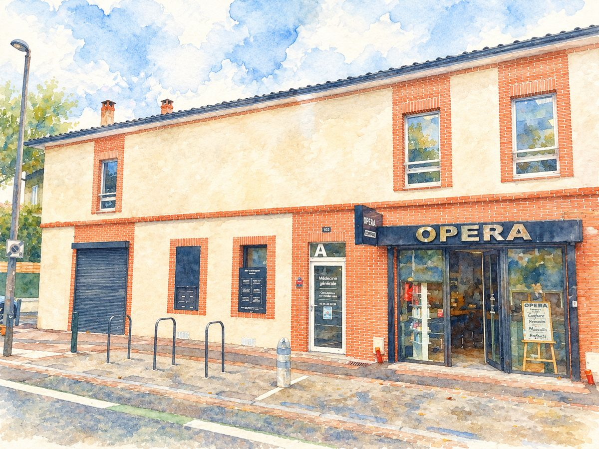
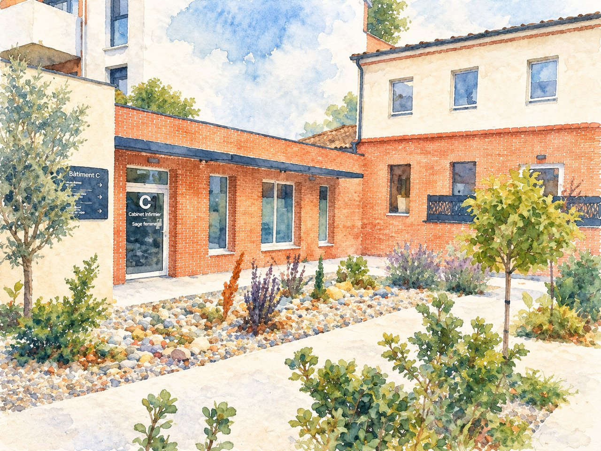

Maison de santé pluridisciplinaire
Une maison, une équipe, vos soins au même endroit.
Au cœur de Croix-Daurade, médecins généralistes, infirmières, kinésithérapeutes, sage-femme, orthophoniste et psychologue travaillent ensemble pour vous suivre au plus près.

103 route d’Albi31200 Toulouse — Croix-Daurade
18professionnels de santé
6métiers sous un même toit
100 %des locaux accessibles PMR
01
Nos professionnels
Choisissez un métier pour découvrir les praticiens, leur adresse et leurs jours de présence.
02
Un lieu pensé pour vous accueillir
Créée par quatre médecins installés dans le quartier depuis des années, la maison de santé réunit des professionnels qui partagent vos informations de santé pour mieux coordonner vos soins.
-
Des soins coordonnésUn dossier médical partagé entre les professionnels de la maison.
-
Accessible à tousAccès entièrement aménagés pour les personnes à mobilité réduite.
-
Facile d’accèsGrand parking patients, stationnement gratuit dans la rue, bus et métro à proximité.
-
Des locaux neufs et lumineuxSalles d’attente accueillantes, cabinets insonorisés, cour et jardin intérieurs.

Professionnels de santé, rejoignez-nous
Des cabinets sont disponibles à la location : environnement pluridisciplinaire, secrétariat, salle de réunion partagée et accueil d’internes.
03
Venir au Coin Santé
Croix-Daurade, un quartier vivant à deux pas des Jardins du Muséum.
-
Maison de santé
103 route d’Albi, 31200 Toulouse
Kinésithérapeutes et un cabinet médical au 160, orthophoniste au 164. -
Accès
Parking patients, stationnement gratuit dans la rue, transports en commun (bus, métro).
En cas d’urgence vitale, appelez le 15 ou le 112.